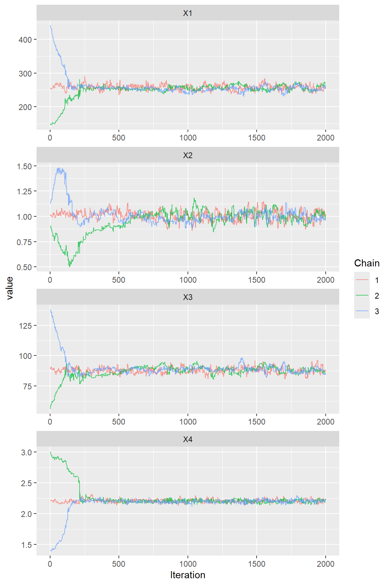

Parameter estimation within a Bayesian MCMC framework
François Bourgin
1 Introduction
1.1 Scope
In this page, we give an example of parameter estimation within a Bayesian MCMC approach.
We use the GR4J model and we assume that the R global environment contains data and functions from the Get Started page.
Please refer to the Plugging in new calibration page for explanations on how to plug in a parameter estimation algorithm to airGR.
Please note that this page is only for illustration purposes and does not provide any guidance about which parameter inference strategy is recommended for the family of the GR models.
1.2 Standard Least Squares (SLS) Bayesian inference
We show how to use the DRAM algorithm for SLS Bayesian inference, with the modMCMC() function of the FME package. First, we need to define a function that returns twice the opposite of the log-likelihood for a given parameter set.
Nota: in the RunAirGR4J() function, the computation of the log-likelihood is simplified in order to ensure a good computing performance. It corresponds to a translation of the two following lines.
Likelihood <- sum((ObsY - ModY)^2, na.rm = TRUE)^(-sum(!is.na(ObsY)) / 2)
LogLike <- -2 * log(Likelihood)In our simplified setting of Gaussian likelihood with measurement error integrated out, the log of the sum of squared error is related to the log-likelihood.
Note that we do not use here any discharge transformation, although applying Box-Cox transformation is quite popular in hydrological modelling.
LogLikeGR4J <- function(ParamOptim) {
## Transformation to real space
RawParamOptim <- airGR::TransfoParam_GR4J(ParamIn = ParamOptim,
Direction = "TR")
## Simulation given a parameter set
OutputsModel <- airGR::RunModel_GR4J(InputsModel = InputsModel,
RunOptions = RunOptions,
Param = RawParamOptim)
## Computation of the log-likelihood: N * log(SS)
ObsY <- InputsCrit$Obs
ModY <- OutputsModel$Qsim
LogLike <- sum(!is.na(ObsY)) * log(sum((ObsY - ModY)^2, na.rm = TRUE))
}2 MCMC algorithm for Bayesian inference
2.1 Estimation of the best-fit parameters as a starting point
We start by using the PORT optimization routine to estimate the best-fit parameters.
2.2 Running 3 chains for convergence assessment
We run 3 chains with different initial values to assess the convergence of the Markov chains. The number of iterations is fixed to 2000 with a burning length of 0.
Nota: in this example, there are relatively few iterations (2000), in order to limit the running time of this page. In addition, the burning length has been set to zero in order to show the convergence process but, in a true exercise, it is better to define more iterations (5000) and to burn the first iterations.
With the DRAM algorithm, the covariance of the proposal is updated every 100 runs and delayed rejection is applied.
iniParPORT <- data.frame(Chain1 = iniParPORT, Chain2 = iniParPORT, Chain3 = iniParPORT,
row.names = paste0("X", 1:4))
iniParPORT <- sweep(iniParPORT, MARGIN = 2, STATS = c(1, 0.9, 1.1), FUN = "*")
iniParPORT[iniParPORT < -9.9] <- -9.9
iniParPORT[iniParPORT > +9.9] <- +9.9
mcmcDRAM <- apply(iniParPORT, MARGIN = 2, FUN = function(iIniParPORT) {
FME::modMCMC(f = LogLikeGR4J,
p = iIniParPORT,
lower = rep(-9.9, times = 4), ## lower bounds for GR4J
upper = rep(+9.9, times = 4), ## upper bounds for GR4J
niter = 2000,
jump = 0.01,
outputlength = 2000,
burninlength = 0,
updatecov = 100, ## Adaptative Metropolis
ntrydr = 2) ## Delayed Rejection
})2.3 MCMC diagnostics and visualisation tools
There are several diagnostics that can be used to check the convergence of the chains. The R package coda provides several diagnostic tests.
Among others, the Gelman and Rubin’s convergence can be used. A value close to 1 suggests acceptable convergence. The result will be better with more iterations than 2000. As we kept the iterations during the convergence process, we have to set the autoburnin argument to TRUE in order to consider only the second half of the series.
Note that we rescale model parameter sets of the GR4J model from the transformed space to the real space.
multDRAM <- coda::as.mcmc.list(lapply(mcmcDRAM, FUN = function(x) {
coda::as.mcmc(airGR::TransfoParam_GR4J(as.matrix(x$pars), Direction = "TR"))
}))
gelRub <- coda::gelman.diag(multDRAM, autoburnin = TRUE)$mpsrf## [1] 1.06In addition, graphical tools can be used, with for example the ggmcmc package.
First, the evolution of the Markov chains can be seen with a traceplot:
parDRAM <- ggmcmc::ggs(multDRAM) ## to convert objet for using by all ggs_* graphical functions
ggmcmc::ggs_traceplot(parDRAM)
The posterior density for each parameter can then be visualised:
burnParDRAM <- dplyr::filter(parDRAM, Iteration > 1000) # to keep only the second half of the series
ggmcmc::ggs_density(burnParDRAM)
Finally, a paired plot can be useful to look at the correlation between parameters. Highly correlated parameters can be seen as an indication for a structural deficit of the model used.

2.4 Exploring further possibilities
We only presented one MCMC algorithm and one parameter inference setting. Nonetheless, other approaches can be explored within the same framework.
One can for example use different data transformations to deal with the limitations of the Gaussian error model.